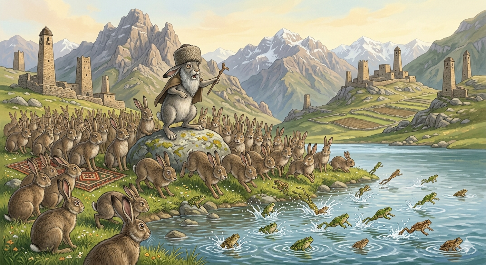

И.А. Дахкильгов. Хьехаме дувцарш - поучительные рассказы-притчи.
И.А. Дахкильгов. Хьехаме дувцарш - поучительные рассказы-притчи. Из ингушского фольклора.

Вайла зовзагӀа хӀамаш хиннай
Пхьагалаша кхетаче яь хиннай. Шоаш зовза хилар дийцад. Ча, бордз, цогал, моллагӀа кхыдола аькха вайла толашагӀа да, сов чӀоагӀа царех кхераш хиларах, чухьа са доацаш лел вай, яхаш дийцад. - Вайла зовзагӀа дийнат дац укх дунен чу, - аьннад йоккхагӀа йолча пхьагало, - ер дуне дита деза вай. Цу деша раьза хиннай пхьагалаш. Мишта ла вай, аьнна, дийцад. ТӀаккха ваӀад яьй хи чу кховсаена дӀаяла. Йоккхача тоабанца тетта Ӏам болчахьа дӀайолаеннай пхьагалаш. Ӏам тӀа ераш дӀакхаьчача, царех кхераенна кога кӀалхара пхьидарч "тӀалкъ-тӀалкъ" аьнна, хи чу кховсаеннай. - Сабарделаш! - аьннад йоаккхагӀа пхьагало. - Вайл а зовзагӀа хӀамаш хиннай шоана; гой ер пхьидарч, вайх кхераенна хи чу кховсаенна. Циггач пхьагалаш юхайийрзай.
РУССКИЙ
Есть и трусливее нас
Зайцы устроили собрание. Разговор велся о заячьей трусости. Говорили, что медведь, волк, лиса, другие звери храбрые, а они, зайцы, всех их боятся, живут в постоянном страхе перед ними. "Нет на свете тварей, трусливее нас, - сказал старший из зайцев, - нам надо уйти из этого мира". Зайцы согласились и стали думать: как им это лучше сделать. Дружно порешили они утопиться. Большой стаей двинулись зайцы к озеру. Лишь подошли, как из-под их ног, перепуганные лягушки стали прыгать в озеро. "Остановитесь! - окликнул старший из зайцев. - Оказывается, есть твари трусливее нас. Видите, лягушки нас испугались и побросились в озеро". Довольные зайцы повернули назад.
ENGLISH
There are those who are even more cowardly than us
The hares held a meeting. The conversation turned to the hares' cowardice. They said that the bear, the wolf, the fox and other animals were brave, whereas they, the hares, were afraid of them all and lived in constant fear of them. "There are no creatures in the world more cowardly than us," said the eldest of the hares, "we must leave this world." The hares agreed and began to think about the best way to go about it. Together, they decided to drown themselves. In a large flock, the hares set off towards the lake. No sooner had they approached than, from beneath their feet, the frightened frogs began to leap into the lake. 'Stop!' called out the eldest of the hares. 'It turns out there are creatures even more cowardly than us. Look, the frogs were frightened of us and rushed into the lake.' Satisfied, the hares turned back.
НОХЧИЙН
ПОГОВОРКИ
Аьхки бӀехало кхераваьр Ӏай корсах кхийрав. Летом напуганный змеею, зимой испугался травяного жгута.Берзо кхераваьр жӀалех веддав. Напуганный волком бежал от собаки.“Велча-ма, сога виталахь”, - яхад зовзачо. “Если умрет, то я с ним справлюсь”, - говаривал трус.Виро “кхахь” аьлча, кхеравенна веннав зовзавар. Трус умирает даже от ослиного кашля.Истара дегӀ а долаш, пхьагала дог а долаш хул цхьабараш. Есть такие: тело бычье, а душа заячья.Саг кхеравича, дикагӀа хул. Напугай человека, и он станет податливее.Сага майрал жӀалена дика хов. Собака различает труса и храбреца.Туро кхераваьр гӀажах кхийрав. Напуганный саблею, палки боялся.ТӀачовхарах кхера ма ле, хьастарах Ӏеха ма ле. Не страшись угроз и не обманись лестью.Цисках кхерабенна Ӏургара ца баьнна дахка моцала беннаб. Мышь, которая не покидала норы из страха перед кошкой, сдохла от голода.Цхьаннех кот воале а дукханех кот варгвац. Одного можно одолеть, но многих одолеть невозможно.Ше котъяьргйоацачара бордз а йодаш хул. И волк бежит, когда знает, что не победит.